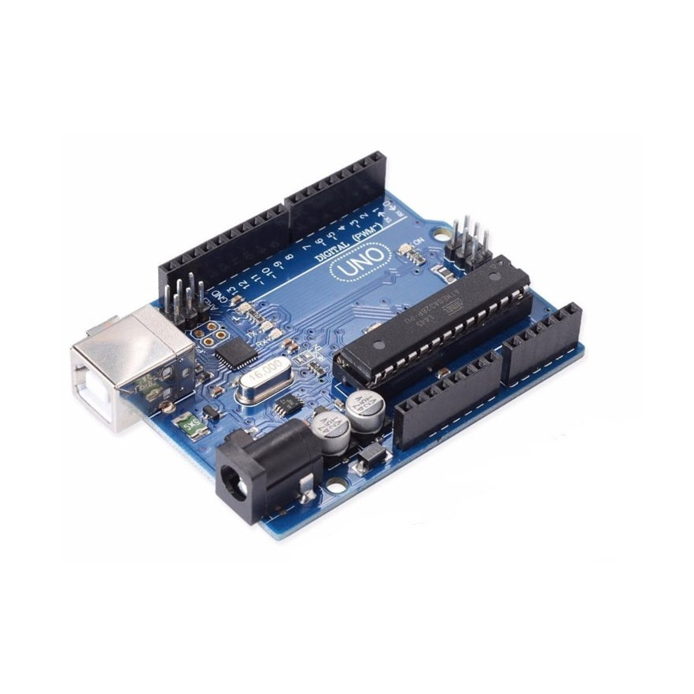

Projeto
Um projeto com Arduino envolve a criação de um sistema eletrônico controlado por um microcontrolador Arduino. Normalmente, o projeto começa com a identificação de um problema ou uma ideia que requer alguma forma de automação, medição, controle ou interação com o ambiente. Em seguida, os componentes eletrônicos, como sensores, atuadores e LEDs, são conectados à placa Arduino.

O próximo passo envolve a programação do Arduino para definir o comportamento do sistema. Isso é feito escrevendo código em uma linguagem baseada em C/C++, que instrui o microcontrolador a ler dados dos sensores, tomar decisões com base nesses dados e controlar os atuadores de acordo.
Por exemplo, um projeto com sensor de movimento é um sistema que usa um Arduino para controlar a iluminação ou realizar outras ações automaticamente quando detecta movimento. Um sensor de movimento, como o PIR, é usado para identificar a presença de movimento, e o Arduino é programado para responder a essa detecção, acendendo luzes, por exemplo. Isso é útil para economizar energia, segurança e automação residencial.
No final, os projetos Arduino podem variar amplamente, desde sistemas de automação residencial até robôs, dispositivos de monitoramento ambiental, instrumentos musicais eletrônicos e muito mais. A versatilidade e a acessibilidade do Arduino o tornam uma escolha popular para entusiastas e profissionais que desejam criar soluções personalizadas com eletrônica e programação.
Quem Somos
Codall tem como missão oferecer soluções inovadoras e personalizadas por meio da programação Arduino, criando produtos e sistemas que simplificam a vida cotidiana e impulsionam a automação inteligente.
Oferecemos serviços de consultoria e desenvolvimento para projetos personalizados usando a plataforma Arduino, desde a concepção até a implementação.

Missão
A nossa missão é capacitar inovações por meio do fornecimento de sensores
Arduino de alta qualidade e soluções integradas. Comprometemo-nos a oferecer produtos
inovadores e confiáveis que inspiram a criatividade e promovam o desenvolvimento de
projetos tecnológicos. Buscamos simplificar a integração de sensores em aplicações
diversas, contribuindo assim para um futuro mais tecnologicamente capacitado e
sustentável.
Visão
Visamos ser líderes na inovação em sensores Arduino, impulsionando a próxima era
de soluções tecnológicas. Enxergamos um futuro onde a nossa tecnologia desempenha um
papel fundamental na criação de ambientes inteligentes, impulsionando a automação, a
conectividade e a eficiência em uma ampla gama de setores. Ao centrarmos nossos
esforços na excelência em engenharia, colaboração com a comunidade global de
desenvolvedores e contínua pesquisa e desenvolvimento, buscamos moldar um mundo
onde a tecnologia é acessível, inspiradora e transformadora.
Valores
Ética, comprometimento, valorização Humana, transparência, profissionalismo e
prosperidade. Abraçamos a inovação contínua como um meio de impulsionar a evolução
educacional de forma sustentável. Buscamos constantemente novas tecnologias e
abordagens que melhorem significativamente a experiência de aprendizado.